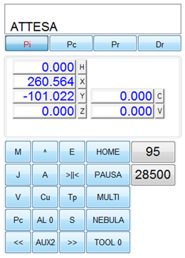
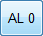
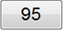
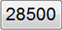
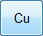
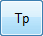
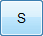
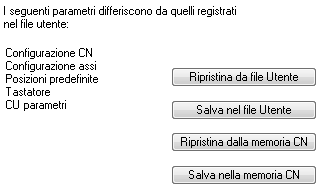

Tipi di dato specifici
Raggruppa i valori di un punto di tastatura misurati durante l’esecuzione di specifici comandi ISO di tastatura:
Raggruppa i valori di un punto di visione misurati durante l’esecuzione di specifici comandi ISO di acquisizione da camera:
Tastatore |
Il tastatore è usato per calcolare un valore di correzione della posizione dell’asse Z. La correzione è sempre riferita al valore del preset Z che deve essere stato precedentemente determinato come quota di contatto sul piano 0. |
|
abilita il dispositivo |
Si |
abilita il dispositivo di tastatura |
dispositivo pneumatico |
Si |
indica se il dispositivo è di tipo pneumatico |
offset X |
40.216 |
distanza lungo X tra il mandrino e il tastatore |
offset Y |
70.248 |
distanza lungo Y tra il mandrino e il tastatore |
preset Z |
111.900 |
valore di preset Z del tastatore |
risoluzione XY |
5.000 |
distanza XY in mm tra una tastatura e la successiva |
abbassamento in rapido |
105.000 |
quota Z di abbassamento in rapido del tastatore; se il contatto viene rilevato durante questo abbassamento, la tastatura viene interrotta. |
limite di abbassamento |
113.000 |
quota Z di massimo abbassamento del tastatore; raggiunta questa quota senza contatto, la tastatura viene interrotta. |
Z di sicurezza |
2.000 |
sollevamento Z dalla quota di tastatura tra un punto e il successivo. |
indirizzo dispositivo |
2 |
indirizzo del dispositivo pneumatico |
Punto da rilevare |
I punti da rilevare sono associati ai comandi M222, M223 e M224. Il pulsante |
|
seleziona il punto |
1 |
seleziona il punto da rilevare (1-2-3-4) |
abilita il rilevamento |
No |
abilita il rilevamento per il punto selezionato |
X |
0.000 |
posizione assoluta X del punto selezionato |
Y |
0.000 |
posizione assoluta Y del punto selezionato |
Z |
0.000 |
correzione Z rilevata. modifica il valore di correzione del punto selezionato di decimi, centesimi e millesimi. |
calibro lineare |
Si |
Abilita l’uso del calibro lineare |
Per CN con versione sw 2015, è possibile utilizzare il tastatore o il calibro lineare per determinare la quota Z sul materiale inseguendo un percorso descritto da un file cnc.
per l’uso della satinatrice
Satinatrice |
Sono indicati con T20 o T21 gli utensili della satinatrice, con T22 o T23 gli utensili della Guillocher. |
|
offset X |
0.000 |
distanza lungo X tra il mandrino e la satinatrice |
offset Y |
0.000 |
distanza lungo Y tra il mandrino e la satinatrice |
preset Z (T20) |
0.000 |
valore di preset Z per l’utensile T20.
|
preset Z (T21) |
0.000 |
valore di preset Z per l’utensile T21 |
Guillocher |
||
preset Z (T22) |
0.000 |
valore di preset Z per l’utensile T22 |
preset Z (T23) |
0.000 |
valore di preset Z per l’utensile T23 |
(Hotkey: F1)

Mostra un quadro riepilogativo dello stato del CN, delle posizioni degli assi e delle velocità correnti degli assi e della fresa. Può essere usato in alternativa al telecomando multifunzione.
mostra le posizioni iniziali degli assi; se il CN è nello stato di attesa, permette di modificare la posizione iniziale; se il CN è in lavorazione, mostra le posizioni iniziali eventualmente modificate dalla lavorazione ma non permette alcuna modifica |
|
mostra le posizioni correnti degli assi |
|
mostra le posizioni correnti degli assi relativamente alle loro posizioni iniziali |
|
mostra la distanza corrente degli assi dal prossimo punto |
|
Il pulsante ha tre differenti funzioni: per iniziare la lavorazione (Start), per arrestare la lavorazione in corso (Stop), per riportare gli assi nella posizione zero (Home) |
|
comanda la sospensione temporanea della lavorazione. Il CN solleva l’asse Z a inizio corsa e arresta la fresa. Lo stesso pulsante permette di riprendere la lavorazione esattamente dal punto in cui era stata sospesa |
|
comanda la ripetizione continua della lavorazione; mostra a fianco un contatore che viene incrementato alla fine di ogni lavorazione |
|
permette di impostare la nebulizzazione; non usare in caso di mandrino multiplo |
|
numero dell’utensile in uso; clic sul pulsante per accedere ai parametri del cambio utensile o del multi-mandrino |
|
 |
numero dell’allineamento lastre in uso; ; clic sul pulsante per modificare questo parametro |
 |
velocità corrente di lavoro degli assi XY in mm/sec; clic sull’indicatore per accedere al controllo delle velocità |
 |
velocità di rotazione della fresa in rotazioni per minuto (rpm); clic sull’indicatore per accedere ai parametri della fresa |
 |
sempre accessibile; propone il menù principale che si può scorrere con [^] e confermare con [E]. Nello stato di jog, propone il menù jog. |
 |
Se è visibile un menù permette di scorrerlo; nello stato di jog cambia l’asse selezionato; in vista [Pc] cambia l’asse |
 |
conferma la selezione della voce corrente di menù; cancella un eventuale messaggio di allarme |
accessibile solo nello stato di ATTESA o di ALLARME; entra ed esce da jog proponendo la posizione corrente e quella con offset iniziale dell’asse X |
|
accessibile solo nello stato di jog; aggiorna la posizione iniziale dell’asse selezionato, visualizza un messaggio e torna a visualizzare la posizione corrente dell’asse selezionato |
|
aggiorna il valore di movimento minimo, visualizza il valore e torna a visualizzare la posizione corrente dell’asse selezionato |
|
sempre accessibile; visualizza la velocità corrente degli assi, la percentuale e la velocità della fresa e ne permette la modifica con il volantino |
|
 |
accessibile solo nello stato di jog; visualizza lo stato del magazzino; accetta il comando [M] per visualizzare il menu del cambio utensile |
 |
accessibile solo nello stato di jog; attiva la procedura di preset e torna alla vista della posizione corrente dell’asse Z |
sempre accessibile; nello stato di jog visualizza la posizione corrente e quella con offset iniziale dell’asse selezionato; nello stato di RUN, visualizza la posizione corrente dell’asse X; accetta il comando [^] per cambiare asse; nello stato di RUN, accetta la contemporanea variazione della velocità assi con il volantino |
|
 |
nello stato di jog, accende e spegne la fresa |
|
nello stato di jog, muove l’asse selezionato |
Permette di abilitare o disabilitare uno dei seguenti controlli:
Controllo azionamenti |
Gli assi sono elencati secondo quanto indicato nella Configurazione Assi |
|
Abilita il controllo |
Si |
Abilita o disabilita il controllo degli azionamenti per tutti gli assi |
Asse X |
Si |
Controllo dell'azionamento per l'asse X |
Asse Y |
Si |
Controllo dell'azionamento per l'asse Y |
Asse Z |
Si |
Controllo dell'azionamento per l'asse Z |
Asse A |
Si |
Controllo dell'azionamento per l'asse A |
Asse B |
Si |
Controllo dell'azionamento per l'asse B |
Asse C |
Si |
Controllo dell'azionamento per l'asse C |
Asse V |
Si |
Controllo dell'azionamento per l'asse V |
Asse W |
Si |
Controllo dell'azionamento per l'asse W |
Asse U |
Si |
Controllo dell'azionamento per l'asse U |
Controllo encoder |
Si |
Abilita il controllo encoder per tutti gli assi |
Sicurezza |
L’Allarme Sicurezza segnala una condizione di pericolo da ripari mobili o dai pulsanti di emergenza. |
|
Allarme Sicurezza da PLC |
Si |
Inverte il segnale di Allarme Sicurezza |
Controllo fresa |
||
Inverter |
Si |
Controllo dell'azionamento fresa |
Flusso di condizionamento |
Si |
Controllo del flusso del liquido di condizionamento |
Livello condizionamento |
Si |
Controllo del livello del liquido di condizionamento |
Temperatura condizionamento |
Si |
Controllo della temperatura del liquido di condizionamento |
Livello liquido spray |
Si |
Controllo del livello del liquido per la nebulizzazione |
Verifica impianto |
||
Pressione impianto |
Si |
Controllo della pressione nell'impianto dell'aria compressa |
Perdita del vuoto |
Si |
Controllo della perdita del vuoto nell'impianto |
Controllo temperature |
Solo per elettronica FDC |
|
temperatura Intervento chiller |
25 |
Valore della temperatura di condizionamento mandrino per intervento compressore |
temperatura allarme chiller |
35 |
Valore di allarme della temperatura di condizionamento mandrino |
temperatura Intervento armadio |
35 |
Valore della temperatura nell'armadio per intervento ventola |
temperatura allarme armadio |
45 |
Valore di allarme della temperatura nell'armadio |
Alimentatore lastra |
||
Controllo presenza lastra |
Si |
Abilita il controllo della presenza lastra |
Controllo rulli |
No |
Abilita il movimento rulli nell'avanzamento lastra |
Per coordinare il corretto posizionamento degli assi è indispensabile specificare l’ordine di movimentazione di ogni singolo asse nelle fasi di Home, di cambio utensile e di preset utensile.
Per ciascuna delle tre fasi, indicate la sequenza come segue: [Z+XY+AB]
dove le parentesi [ e ] indicano l’inizio e la fine della sequenza,
Z,X,Y,A,B indicano gli assi,
+ separatore.
Home |
||
sequenza di Home HW |
[Z+XY+AB] |
indica l'ordine di ritorno a zero degli assi |
sequenza di Home SW |
Non usata |
|
Preset utensile |
||
sequenza di preset |
[Z+XY+AB] |
indica l'ordine di movimento degli assi per il preset |
posizione asse A |
posizione assoluta dell'asse A prima di eseguire il preset |
|
posizione asse B |
posizione assoluta dell'asse B prima di eseguire il preset |
|
Cambio utensile |
||
sequenza di cambio utensile |
[Z+XY+AB] |
indica l'ordine di movimento degli assi per il cambio utensile; indicare con M l’apertura del magazzino utensili, e con W l’eventuale attesa della completa apertura del magazzino. |
muovere asse A |
No |
indica se l'asse A deve essere mosso prima del cambio utensile |
posizione asse A |
0.000 |
posizione assoluta dell'asse A prima di eseguire il cambio utensile |
muovere asse B |
No |
indica se l'asse B deve essere mosso prima del cambio utensile |
posizione asse B |
0.000 |
posizione assoluta dell'asse B prima di eseguire il cambio utensile |
Esegue un controllo tra i parametri ricevuti dal CN e quelli registrati nel file utente, segnalando in una lista il gruppo dei parametri che risultano diversi. Fare doppio clic sulla voce riportata nella lista, per accedere direttamente al gruppo di parametri.

Fare clic sul pulsante per inviare al CN tutti i parametri registrati nel file utente; non viene eseguito il salvataggio nella memoria permanente del CN.
Fare clic sul pulsante per salvare tutti i parametri del CN nel file utente.
Fare clic sul pulsante ; invia al CN un comando per il ripristino di tutti i parametri registrati nella sua memoria permanente.
Fare clic sul pulsante ; invia al CN un comando per il salvataggio di tutti i parametri correnti nella sua memoria permanente.
Legge ed eventualmente modifica degli stati della macchina.
Deve essere usata solo da personale esperto addetto all’assistenza.
Opzioni CN |
|||
modalità operatore |
Si |
Imposta i menu del CN in forma ridotta |
|
disabilita volantino |
No |
disabilita l'uso del volantino nel terminale multifunzione |
|
velocità in sec. |
Si |
Imposta le velocità degli assi in mm al secondo |
|
salva sempre pos. iniziali |
No |
salvataggio automatico della posizione iniziale degli assi |
|
disabilita warm-up |
No |
disabilita la procedura di Warm-up del mandrino |
|
ripristino pos. assi |
No |
abilita il ripristino della posizione assi |
|
disabilita T da volantino |
No |
disabilita la selezione della torretta T da volantino |
|
mappatura assi |
No |
abilita la mappatura degli assi |
|
salva parametri su flash e su disco |
No |
abilita la registrazione dei parametri su disco e su CN |
|
Lingua |
Italiano |
imposta la lingua dei messaggi nel CN |
|
Filtro vibrazioni |
No |
Abilita il filtro vibrazioni |
|
Laser esterno |
No |
Imposta l’uso del laser esterno |
Gruppo mandrino |
||
mandrino con cambio utensile |
Si |
mandrino singolo con cambio utensile automatico |
multi mandrino pneumatico |
No |
mandrino multiplo pneumatico senza cambio utensile |
multi mandrino |
No |
mandrino multiplo senza cambio utensile |
mono mandrino |
No |
mandrino singolo senza cambio utensile |
Magazzino utensili |
||
atc standard (7 pos) |
Si |
magazzino utensili con rastrelliera in linea a 7 posizioni |
atc GS (10 pos) |
No |
magazzino utensili con rastrelliera doppia a 5+5 posizioni "gold" |
atc DS (10 pos) |
No |
magazzino utensili con rastrelliera doppia a 5+5 posizioni "dental" |
Gruppo utensili speciali |
||
diamantatrice cambio utensile |
Si |
diamantatrice con cambio diamante automatico |
diamantatrice a rotella A |
No |
diamantatrice standard con diamante singolo a rotella su asse A |
diamantatrice a rotella B |
No |
diamantatrice standard con diamante singolo a rotella su asse B |
movimento lama |
No |
movimento lama |
Accessori |
||
pompa a vuoto |
Si |
Indica la presenza della pompa a vuoto |
tastatore |
Si |
Indica la presenza del tastatore |
satinatrice |
Si |
Indica la presenza della satinatrice |
guillocher |
No |
Indica la presenza della guillocher |
alimentatore lastra |
Si |
Indica la presenza dell'alimentatore lastra |
alimentatore lastra 2 |
No |
Indica la presenza dell'alimentatore lastra tipo 2 |
alimentatore lastra 3 |
No |
Indica la presenza dell'alimentatore lastra tipo 3 con trascinamento a rulli |
cambio anelli |
No |
Indica la presenza del cambio anelli automatico |
lavorazione tubo |
No |
Indica la presenza della lavorazione tubo |
controllo morse |
No |
Indica la presenza del controllo morse |
tavola rotante |
No |
Indica la presenza della tavola rotante |
morse pneumatiche |
No |
Indica la presenza delle morse pneumatiche |
sensore a forcella |
No |
Indica la presenza del sensore a forcella |
marcatura laser |
No |
Indica la presenza del marcatore laser (solo con CN versione G) |
Luxottica |
||
intestatrice F1 TRS |
No |
|
intestatrice F9 |
No |
Permette di configurare gli assi controllati dal CN.
Configurazione asse |
||
Selezione asse |
X |
Indicare uno degli assi XYZABCVW |
Tipo asse |
Indica se l’asse selezionato è lineare o di rotazione. Per un asse di rotazione forza a 360 il passo vite. |
|
Presenza asse |
Si |
abilita il controllo dell'asse selezionato |
Limiti |
||
Limite inferiore |
0.000 |
limite inferiore della corsa dell'asse |
Limite superiore |
385.000 |
limite superiore della corsa dell'asse |
Parametri |
||
tipo di motore |
0 |
tipo di motore |
velocità max. in mm/sec |
500 |
velocità max. consentita per l'asse selezionato in mm/sec |
accelerazione max. in mm/sec2 |
900 |
accelerazione max. consentita per l'asse selezionato in mm/sec2 |
numero di impulsi/giro |
5000 |
numero di impulsi necessari per un giro completo del motore |
passo della vite |
10 |
avanzamento della posizione lungo l’asse selezionato per un giro del motore |
rapporto di riduzione |
1 |
rapporto di riduzione |
direzione asse |
1 |
direzione asse |
Encoder |
||
presenza encoder |
Si |
presenza encoder |
numero di impulsi/giro |
2250 |
numero di impulsi encoder per un giro completo del motore |
direzione encoder |
1 |
direzione encoder |
errore di inseguimento |
300 |
errore di inseguimento in micron |
zero encoder |
Si |
abilita l'azzeramento dell'asse sullo zero dell'encoder |
zero solo su encoder |
No |
abilita l'azzeramento dell'asse SOLO sullo zero dell'encoder |
distanza zero encoder |
1.753 |
distanza da recuperare dopo l’azzeramento sullo zero encoder |
informazioni |
Le informazioni che seguono non sono modificabili e dipendono dai parametri impostati sopra, |
|
Massima corsa asse mm o gradi |
||
Risoluzione in mm o gradi |
||
Risoluzione encoder in mm o gradi |
||
Massima velocità asse in mm/sec o gradi/sec |
aggiornamento del firmware del CN. Seguire questa procedura:
Nel caso di più macchine collegate allo stesso computer, permette di cambiare il collegamento con Skipper, o di modificare il nome di una macchina collegata.
Avvertenze:
Per collegarsi ad un’altra macchina, selezionare la macchina dall’elenco proposto e comandare Connetti.
La barra del titolo della finestra principale di Skipper deve mostrare il nome della macchina collegata.
Per cambiare il nome di una macchina, selezionare la macchina dall’elenco proposto e comandare Rinomina.
Viene richiesto di indicare il nuovo nome e di comandare OK.
Avvertenze:
Per problemi di assistenza tecnica sulla macchina, è possibile utilizzare questa funzione che permette di conoscere lo stato di tutte le variabili del programma di controllo.
Deve essere usata solo da personale esperto addetto all’assistenza.
 acquisisce la posizione corrente degli assi XY come posizione del punto selezionato.
acquisisce la posizione corrente degli assi XY come posizione del punto selezionato.